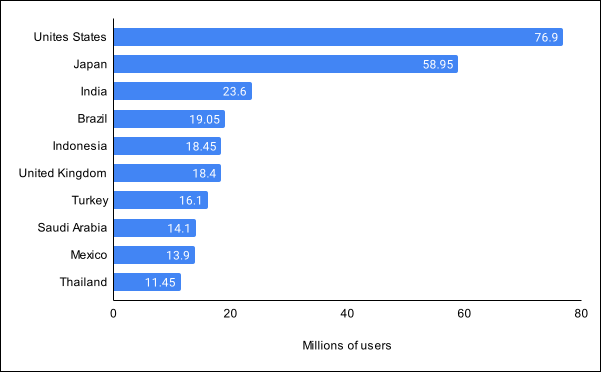
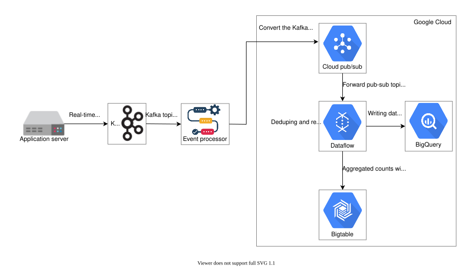
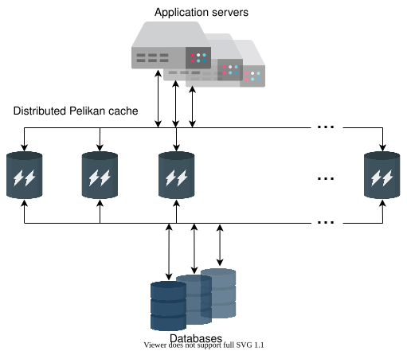
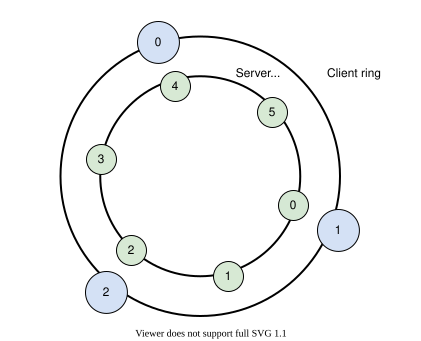
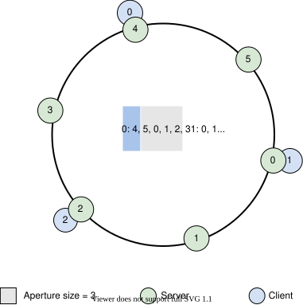
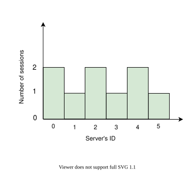
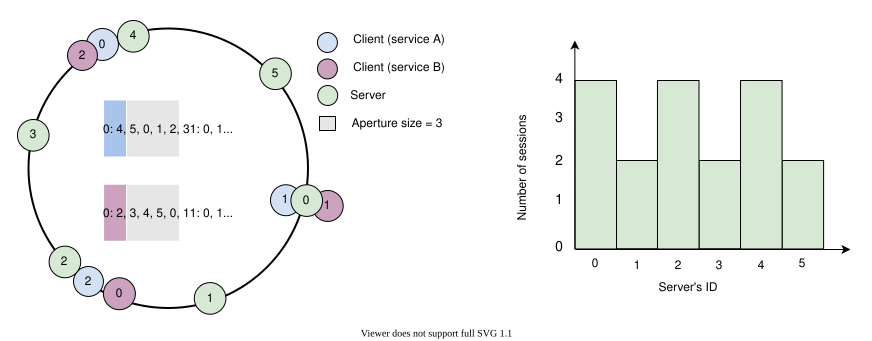
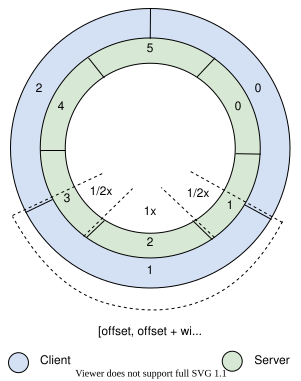

31. Design Twitter
System Design: Twitter
System Design: Twitter
Get an overview of Twitter and a brief description of what we’ll learn in this chapter.
We'll cover the following
Twitter#
Twitter is a free microblogging social network where registered users post messages called “Tweets”. Users can also like, reply to, and retweet public tweets. Twitter has about 397 million users as of 2021 that is proliferating with time. One of the main reasons for its popularity is the vast sharing of the breaking news on the platform. Another important reason is that Twitter allows us to engage with and learn from people belonging to different communities and cultures.
The illustration below shows the country-wise userbase of Twitter as of January 2022 (source: Statista), where the US is taking the lead. Such statistics are important when we design our infrastructure because it allows us to allocate more capacity to the users of a specific region, and traffic served from near specific users.

How will we design Twitter?#
We’ll divide Twitter’s design into four sections:
- Requirements: This lesson describes the functional and non-functional requirements of Twitter. We’ll also estimate multiple aspects of Twitter, such as storage, bandwidth, and computational resources.
- Design: In this lesson, we’ll discuss the high-level design of Twitter in this lesson. We also briefly explain the API design and identify the significant components of the Twitter architecture. Moreover, we will discuss how to manage the Top-k problem, such as Tweets liked or viewed by millions of users on Twitter.
- Client-side load balancers: This lesson discusses how Twitter performs load balancing for its microservices system to manage billions of requests between various services’ instances. Furthermore, we also see why Twitter uses a customized load-balancing technique instead of other commonly used approaches.
- Quiz: Finally, we’ll reinforce major concepts of Twitter design with a quiz.
Let’s begin with defining Twitter’s requirements.
Requirements of Twitter’s Design
Requirements of Twitter’s Design
Understand the requirements and estimation for Twitter's design.
We'll cover the following
Requirements#
Let’s understand the functional and non-functional requirements below:
Functional requirements#
The following are the functional requirements of Twitter:
-
Post Tweets: Registered users can post one or more Tweets on Twitter.
-
Delete Tweets: Registered users can delete one or more of their Tweets on Twitter.
-
Like or dislike Tweets: Registered users can like and dislike public and their own Tweets on Twitter.
-
Reply to Tweets: Registered users can reply to the public Tweets on Twitter.
-
Search Tweets: Registered users can search Tweets by typing keywords, hashtags, or usernames in the search bar on Twitter.
-
View user or home timeline: Registered users can view the user’s timeline, which contains their own Tweets. They can also view the home’s timeline, which contains followers’ Tweets on Twitter.
-
Follow or unfollow the account: Registered users can follow or unfollow other users on Twitter.
-
Retweet a Tweet: Registered users can Retweet public Tweets of other users on Twitter.
Non-functional requirements#
-
Availability: Many people and organizations use Twitter to communicate time-sensitive information (service outage messages). Therefore, our service must be highly available and have a good uptime percentage.
-
Latency: The latency to show the most recent top Tweets in the home timeline could be a little high. However, near real-time services, such as Tweet distribution to followers, must have low latency.
-
Scalability: The workload on Twitter is read-heavy, where we have many readers and relatively few writers, which eventually requires the scalability of computational resources. Some estimates suggest a 1:1000 write-to-read ratio for Twitter. Although the Tweet is limited to 280 characters, and the video clip is limited to 140s by default, we need high storage capacity to store and deliver Tweets posted by public figures to their millions of followers.
-
Reliability: All Tweets remain on Twitter. This means that Twitter never deletes its content. So there should be a promising strategy to prevent the loss or damage of the uploaded content.
-
Consistency: There’s a possibility that a user on the east coast of the US does not get an immediate status (like, reply, and so on.) update on the Tweet, which is liked or Retweeted by a user on the west coast of the US. However, the user on the west coast of the US needs an immediate status update on his like or reply. An effective technique is needed to offer rapid feedback to the user (who liked someone’s post), then to other specified users in the same region, and finally to all worldwide users linked to the Tweet.

Furthermore, we must identify which essential resources must be estimated in the Twitter design. We used Twitter as an example in our Back-of-the-Envelope chapter, so we won’t repeat that exercise here.
Building blocks we will use#
Twitter’s design utilizes the following building blocks that we discussed in the initial chapters.

- DNS is the service that maps human-friendly Twitter domain names to machine-readable IP addresses.
- Load balancers distribute the read/write requests among the respective services.
- Sequencers generate the unique IDs for the Tweets.
- Databases store the metadata of Tweets and users.
- Blob stores store the images and video clips attached with the Tweets.
- Key-value stores are used for multiple purposes such as indexing, identifying the specified counter to update its value, identifying the Tweets of a particular user and many more.
- Pub-sub is used for real-time processing such as elimination of redundant data, organizing data, and much more.
- Sharded counters help to handle the count of multiple features such as viewing, liking, Retweeting, and so on,. of the accounts with millions of followers.
- A cache is used to store the most requested and recent data in RAM to give users a quick response.
- CDN helps end users to access the data with low latency.
- Monitoring analyses all outgoing and incoming traffic, identifies the redundancy in the storage system, figures out the failed node, and so on.
In the next lesson, we’ll discuss the design of the Twitter system.
High-level Design of Twitter
High-level Design of Twitter
Understand the high-level design of the Twitter service.
User-system interaction#
Let’s begin with the high-level design of our Twitter system. We’ll initially highlight and discuss the building blocks, as well as other components, in the context of the Twitter problem briefly. Later on, we’ll dive deep into a few components in this chapter.

-
Users post Tweets delivered to the server through the load balancer. Then, the system stores it in persistent storage.
-
DNS provides the specified IP address to the end user to start communication with the requested service.
-
CDN is situated near the users to provide requested data with low latency. When users search for a specified term or tag, the system first searches in the CDN proxy servers containing the most frequently requested content.
-
Load balancer chooses the operational application server based on traffic load on the available servers and the user requests.
-
Storage system represents the various types of storage (SQL-based and NoSQL-based) in the above illustration. We’ll discuss significant storage systems later in this chapter.
-
Application servers provide various services and have business logic to orchestrate between different components to meet our functional requirements.
We have detailed chapters on DNS, CDN, specified storage systems (Databases, Key-value store, Blob store), and Load balancers in our building blocks section. We’ll focus on further details specific to the Twitter service in the coming lessons. Let’s first understand the service API.
API design#
This section will focus on designing various APIs regarding the functionalities we are providing. We learn how users request various services through APIs. We’ll only concentrate on the significant parameters of the APIs that are relevant to our design. Although the front-end server can call another API or add more parameters in the API received from the end users to fulfill the given request, we consider all relevant arguments specified for the particular request in a single API. Let’s develop APIs for each of the following features:
- Post Tweet
- Like or dislike Tweet
- Reply to Tweet
- Search Tweet
- View user or home timeline
- Follow or unfollow the account
- Retweet a Tweet
Post Tweet#
The POST method is used to send the Tweet to the server from the user through the /postTweet API.
postTweet(user_id, access_type, tweet_type, content, tweet_length, media_field, list_of_followers, post_time, tweet_location, list_of_used_hashtags, list_of_tagged_people)
Let’s discuss a few of the parameters:
Parameter | Description |
| It indicates the unique ID of the user who posted the Tweet. |
| It tells us whether the Tweet is protected (that is, only visible to followers) or public. |
| It indicates whether the Tweet is text-based, video-clip based, image(s)-based, or consisting of different types. |
| It specifies the Tweet’s actual content (text). |
| It represents the text length in the Tweet. In the case of video, it tells us the duration and size of a video. |
| It specifies the type of media (image, video, GIF, and so on) delivered in each Tweet. |
| It provides the current followers of the account posting the Tweet. This parameter is filled by the front-end server after it fetches this information using another API. |
The rest of the parameters are self-explanatory.
Note: Twitter uses the Snowflake service to generate unique IDs for Tweets. We have a detailed chapter (Sequencer) that explains this service.
Points to Ponder
Question 1
At most, how many hashtags can a Tweet have?
1 of 2
Like or dislike Tweet#
The /likeTweet API is used when users like public Tweets.
likeTweet(user_id, tweet_id, tweeted_user_id, user_location)
Parameter | Description |
| It indicates the unique ID of the user who liked the Tweet. |
| It indicates the Tweet's unique ID. |
| This is the unique ID of the user who posted the Tweet. |
| It denotes the location of the user who liked the Tweet. |
The parameters above are also used in the /dislikeTweet API when users dislike others’ Tweets.
Reply to Tweet#
The /replyTweet API is used when users reply to public Tweets.
replyTweet(user_id, tweet_id, tweeted_user_id, reply_type, reply_length, ,list_of_followers)
Parameter | Description |
| It specifies the list of user followers who replied to someone's Tweet. |
The reply_type and reply_length parameters are the same as tweet_type and tweet_length respectively.
Search Tweet#
When the user searches any keyword in the home timeline, the GET method is used. The following is the /searchTweet API:
searchTweet(user_id, search_term, max_result, exclude, media_field, expansions, sort_order, next_token, user_location)
Some new parameters introduced in this case are:
Parameter | Description |
| It is a string containing the search keyword or phrase. |
| It is the number of Tweets returned per response page. By default, the Tweets per response is 10. |
| It specifies what to exclude from the returned Tweets, that is, replies and retweets. The maximum limit on returned Tweets is 3200, but when we exclude replies, the maximum limit is reduced to 800 Tweets. |
| It specifies the media (image, video, GIF) delivered in each returned Tweet. |
| It enables us to request additional data objects in the returned Tweets, such as any mentioned user, referenced Tweet, attached media, attached places objects, and so on. |
| It specifies the order in which Tweets are returned. By default, it will return the most recent Tweets first. |
| It is used to get the next page of results. For instance, if |
Response#
Let’s look at a sample response in JSON format. The id is the user’s unique ID who posted the Tweet and the text is the Tweet’s content. The result_count is the count of the returned Tweet, which we set in the max_result in the request. Here, we’re displaying the default fields only.
Note: Twitter performs various types of searches. The following are two of them:
- One search type returns the result of the last seven days, which all registered users usually use.
- The other type returns all matching results on all Tweets ever posted (remind that service does not delete a posted Tweet). Indeed, matches can contain the first Tweet on Twitter. This search is usually used for academic research.
View home_timeline#
The GET method is suitable when users view their home timelines through the /viewHome_timeline API.
viewHome_timeline(user_id, tweets_count, max_result, exclude, next_tokan, list_of_followers, user_location)
In the /viewUser_timeline API, we’ll exclude the list_of_followers and user_location to get the user timeline.
Point to Ponder
Question
Which parameter in the viewHome_timeline method is the most relevant when deciding which promoted ads (Tweets) to be returned in response?
Follow the account#
The /followAccount API is used when users follow someone’s account on Twitter.
followAccount(account_id, followed_account_id,)
Parameter | Description |
| It specifies the unique ID of a user who follows that account on Twitter. |
| It indicates the unique ID of the account that the user follows. |
The /unfollowAccount API will use the same parameters when a user unfollows someone’s account on Twitter.
Retweet a Tweet#
When a registered user Retweets (re-posts) someone’s Tweet on Twitter, the following /retweet API is called:
retweet(user_id, tweet_id, retweet_user_id, list_of_followers)
The same parameters will be required in the /undoRetweet API when users undo a Retweet of someone’s Tweet.
Detailed Design of Twitter
Detailed Design of Twitter
Take a deep dive into the detailed design of Twitter.
We'll cover the following
Storage system#
Storage is one of the core components in every real-time system. Although we have a detailed chapter on storage systems, here, we’ll focus on the storage system used by Twitter specifically. Twitter uses various storage models for different services to take full advantage of each model. We’ll discuss each storage model and see how Twitter shifted from various databases, platforms, and tools to other ones and how Twitter benefits from all of these.
The content in this lesson is primarily influenced by Twitter’s technical blogs, though the analysis is ours.
-
Google Cloud: In Twitter, HDFS (Hadoop Distributed File System) consists of tens of thousands of servers to host over 300PB data. The data stores in HDFS are mostly compressed by the LZO (data compression algorithm) because LZO works efficiently in Hadoop. This data includes logs (client events, Tweet events, and timeline events), MySQL and Manhattan (discussed later) backups, ad targeting and analytics, user engagement predictions, social graph analysis, and so on. In 2018, Twitter decided to shift data from Hadoop clusters to the Google Cloud to better analyze and manage the data. This shift is named a partly cloudy strategy. Initially, they migrated Ad-hoc clusters (occasional analysis) and cold storage clusters (less accessed and less frequently used data), while the real-time and production Hadoop clusters remained. The big data is stored in the BigQuery (Google cloud service), a fully managed and highly scalable serverless data warehouse. Twitter uses the Presto (distributed SQL query engine) to access data from Google Cloud (BigQuery, Ad-hoc clusters, Google cloud storage, and so on).
-
Manhattan: On Twitter, users were growing rapidly, and it needed a scalable solution to increase the throughput. Around 2010, Twitter used Cassandra (a distributed wide-column store) to replace MySQL but could not fully replace it due to some shortcomings in the Cassandra store. In April 2014, Twitter launched its own general-purpose real-time distributed key-value store, called Manhattan, and deprecated Cassandra. Manhattan stores the backend for Tweets, Twitter accounts, direct messages, and so on. Twitter runs several clusters depending on the use cases, such as smaller clusters for non-common or read-only and bigger for heavy read/write traffic (millions of QPS). Initially, Manhattan had also provided the time-series (view, like, and so on.) counters service that the MetricsDB now provides. Manhattan uses RocksDB as a storage engine responsible for storing and retrieving data within a particular node.
-
Blobstore: Around 2012, Twitter built the Blobstore storage system to store photos attached to Tweets. Now, it also stores videos, binary files, and other objects. After a specified period, the server checkpoints the in-memory data to the Blobstore as durable storage. We have a detailed chapter on the Blob Store, which can help you understand what it is and how it works.
-
SQL-based databases: Twitter uses MySQL and PostgreSQL, where it needs strong consistency, ads exchange, and managing ads campaigns. Twitter also uses Vertica to query commonly aggregated datasets and Tableau dashboards. Around 2012, Twitter also built the Gizzard framework on top of MySQL for sharding, which is done by partitioning and replication. We have a detailed discussion on relational stores in our Databases chapter.
-
Kafka and Cloud dataflow: Twitter evaluates around 400 billion real-time events and generates petabytes of data every day. For this, it processes events using Kafka on-premise and uses Google Dataflow jobs to handle deduping and real-time aggregation on Google Cloud. After aggregation, the results are stored for ad-hoc analysis to BigQuery (data warehouse) and the serving system to the Bigtable (NoSQL database). Twitter converts Kafka topics into Cloud Pub-sub topics using an event processor, which helps avoid data loss and provides more scalability. See the Pub-sub chapter for a deep dive into this.

-
FlockDB: A relationship refers to a user’s followers, who the user follows, whose notifications the user has to receive, and so on. Twitter stores this relationship in the form of a graph. Twitter used FlockDB, a graph database tuned for huge adjacency lists, rapid reads and writes, and so on, along with graph-traversal operations. We have a chapter on Databases and Newsfeed that discuss graph storage in detail.
-
Apache Lucene: Twitter constructed a search service that indexes about a trillion records and responds to requests within 100 milliseconds. Around 2019, Twitter’s search engine had an indexing latency (time to index the new tweets) of roughly 15 seconds. Twitter uses Apache Lucene for real-time search, which uses an inverted index. Twitter stores a real-time index (recent Tweets during the past week) in RAM for low latency and quick updates. The full index is a hundred times larger than the real-time index. However, Twitter performs batch processing for the full indexes. See the Distributed Search chapter to deep dive into how indexing works.

The solution based on the “one size fits all” approach is infrequently effective. Real-time applications always focus on providing the right tool for the job, which needs to understand all possible use cases. Lastly, everything has upsides and downsides and should be applied with a sense of reality.
Cache#
As we know, caches help to reduce the latency and increase the throughput. Caching is mainly utilized for storage (heavy read traffic), computation (real-time stream processing and machine learning), and transient data (rate limiters). Twitter has been used as multi-tenant (multiple instances of an application have the shared environment) Twitter Memcached (Twemcache) and Redis (Nighthawk) clusters for caching. Due to some issues such as unexpected performance, debugging difficulties, and other operational hassles in the existing cache system (Twemcache and Nighthawk), Twitter has started to use the Pelikan cache. This cache gives high-throughput and low latency. Pelikan uses many types of back-end servers such as the peliken_twemcache replacement of Twitter’s Twemcache server, the peliken_slimcache replacement of Twitter’s Memcached/Redis server, and so on.
To dive deep, we have a detailed chapter on an In-memory Cache. Let’s have a look at the below illustration representing the relationship of application servers with distributed Pelikan cache.

Note: Pelikan also introduced another back-end server named Segcache, which is extremely scalable and memory-efficient for small objects. Typically, the median size of the small object is between 200 to 300 bytes in a large-scale application’s cache. Most solutions (Memcache and Redis) have a high size (56 bytes) of metadata with each object. This signifies that the metadata takes up more than one-third of the memory. Pelikan reduced metadata size per object to 38 bytes. Segcache also received NSDI Community Award and is used as an experimental server as of 2021.
Observability#
Real-time applications use thousands of servers that provide multiple services. Monitoring resources and their communication inside or outside the system is complex. We can use various tools to monitor services’ health, such as providing alerts and support for multiple issues. Our alert system notifies broken or degraded services triggered by the set metrics. We can also use the dynamic configuration library that deploys and updates the configuration for multiple services without restarting the service. This library leverages the Zookeeper (discussed later) for the configuration as a source of truth. Twitter used the LonLens service that delivers visualization and analytics of service logs. Later, it was replaced by Splunk Enterprise, a central logging system.
Tracing billions of requests is challenging in large-scale real-time applications. Twitter uses Zipkin, a distributed tracing system, to trace each request (spent time and request count) for multiple services. Zipkin selects a portion of all the requests and attaches a lightweight trace identifier. This sampling also reduces the tracing overhead. Zipkin receives data through the Scribe (real-time log data aggregation) server and stores it in the key-value stores with few indexes.

Most real-time applications use Zookeeper to store critical data. It can also provide multiple services such as distributed locking and leader election in the distribution system. Twitter uses Zookeeper to store service registry, Manhattan clusters’ topology information, metadata, and so on. Twitter also uses it for the leader election on the various systems.
Real-world complex problems#
Twitter has millions of accounts, and some accounts (public figures) have millions of followers. When these accounts post Tweets, millions of followers of the respective account engage with their Tweets in a short time. The problem becomes big when the system handles the billions of interactions (such as views and likes) on these Tweets. This problem is also known as the heavy hitter problem. For this, we need millions of counters to count various operations on Tweets.
Moreover, a single counter for each specific operation on the particular Tweet is not enough. It’s challenging to handle millions of increments or decrements requests against a particular Tweet in a single counter. Therefore, we need multiple distributed counters to manage burst write requests (increments or decrements) against various interactions on celebrities’ Tweets. Each counter has several shards working on different computational units. These distributed counters are known as sharded counters. These counters also help in another real-time problem named the Top-k problem. Let’s discuss an example of Twitter’s Top-k problems: trends and timeline.
Trends: Twitter shows Top-k trends (hashtags or keywords) locally and globally. Here, “locally” refers to when a topic or hashtag is used within the exact location where the requested user is active. Alternatively, “globally” refers to when the particular hashtag is used worldwide. There is a possibility that users from some regions are not using a specific hashtag in their Tweets but get this hashtag in their trends timeline. Hashtags with the maximum frequency (counts) become trends both locally and globally. Furthermore, Twitter shows various promoted trends (known as “paid trends”) in specified regions under trends. The below slides represent hashtags in the sliding window selected as Top-k trends over time.
Timeline: Twitter shows two types of timelines: home and user timelines. Here, we’ll discuss the home timeline that displays a stream of Tweets posted by the followed accounts. The decision to show Top-k Tweets in the timeline includes followed accounts Tweets and Tweets that are liked or Retweeted by the followed accounts. There’s also another category of promoted Tweets displayed in the home timeline.
Sharded counters solve the discussed problems efficiently. We can also place shards of the specified counter near the user to reduce latency and increase overall performance like CDN. Another benefit we can get is a frequent response to the users when they interact (like or view) with a Tweet. The nearest servers managing various shards of the respective counters are continuously updating the like or view counts with short refresh intervals. We should note, however, that the near real-time counts will update on the Tweets with a long refresh interval. The reason is the application server waits for multiple counts submitted by the various servers placed in different regions. We have a detailed chapter on Sharded Counters, explaining how it works in real-time applications.
The complete design overview#
This section will discuss what happens in the back-end system when the end users generate multiple requests. The following are the steps:
-
First, end users get the address of the nearest load balancer from the local DNS.
-
Load balancer routes end users’ requests to the appropriate servers according to the requested services. Here, we’ll discuss the Tweet, timeline, and search services.
-
Tweet service: When end users perform any operation, such as posting a Tweet or liking other Tweets, the load balancers forward these requests to the server handling the Tweet service. Consider an example where users post Tweets on Twitter using the
/postTweetAPI. The server (Tweet service) receives the requests and performs multiple operations. It identifies the attachments (image, video) in the Tweet and stores them in the Blobstore. Text in the Tweets, user information, and all metadata are stored in the different databases (Manhattan, MySQL, Postgresql, Vertica). Meanwhile, real-time processing, such as pulling Tweets, user interactions data, and many other metrics from the real-time streams and client logs, is achieved in the Apache Kafka.Later, the data is moved to the cloud pub-sub through an event processor. Next, data is transferred for deduping and aggregation to the BigQuery through Cloud Dataflow. Finally, data is stored in the Google Cloud Bigtable, which is fully managed, easily scalable, and sorted keys.
-
Timeline service: Assume the user sends a home timeline request using the
/viewHome_timelineAPI. In this case, the request is forwarded to the nearest CDN containing static data. If the requested data is not found, it’s sent to the server providing timeline services. This service fetches data from different databases or stores and returns the Top-k Tweets. This service collects various interactions counts of Tweets from different sharded counters to decide the Top-k Tweets. In a similar way, we will obtain the Top-k trends attached in the response to the timeline request. -
Search service: When users type any keyword(s) in the search bar on Twitter, the search request is forwarded to the respective server using the
/searchTweetAPI. It first looks into the RAM in Apache Lucene to get real-time Tweets (Tweets that have been published recently). Then, this server looks up in the index server and finds all Tweets that contain the requested keyword(s). Next, it considers multiple factors, such as time, or location, to rank the discovered Tweets. In the end, it returns the top Tweets.
-
-
We can use the Zipkin tracing system that performs sampling on requests. Moreover, we can use Zookeeper to maintain different data, including configuration information, distributed synchronization, naming registry, and so on.

Client-side Load Balancer for Twitter
Client-side Load Balancer for Twitter
Let's understand how Twitter performs client-side load balancing.
Introduction#
In the previous lesson, we conceived the design of Twitter using a dedicated load balancer. Although this method works, and we’ve employed it in other designs, it may not be the optimal choice for Twitter. This is because Twitter offers a variety of services on a large scale, using numerous instances and dedicated load-balancers are not a suitable choice for such systems. To understand the concept better, let’s understand the history of Twitter’s design.
Twitter’s design history#
The initial design of Twitter included a monolithic (Ruby on Rails) application with a MySQL database. As Twitter scaled, the number of services increased and the MySQL database was sharded. A monolithic application design like this is a disaster because of the following reasons:
- A large number of developers work on the same codebase, which makes it difficult to update individual services.
- One service’s upgrade process may lead to the breaking of another.
- Hardware costs grow because a single machine performs numerous services.
- Recovery from failures is both time-consuming and complex.
With the way Twitter has evolved, the only way out was many microservices where each service can be served through hundreds or thousands of instances.
Client-side load balancing#
In a client-side load balancing technique, there’s no dedicated intermediate load-balancing infrastructure between any two services with a large number of instances. A node requesting a set of nodes for a service has a built-in load balancer. We refer to the requesting node or service as a client. The client can use a variety of techniques to select a suitable instance to request the service. The illustration below depicts the concept of client-side load balancing. Every new arriving service or instance will register itself with a service registry so that other services are aware of its existence

In the diagram above, Service A has to choose a relatively less-burdened instance of Service B. Therefore, it will make use of the load balancer component inside it to choose the most suitable instance of Service B. Using the same client-side load balancing method, Service B will talk to other services. It’s clear that Service A is the client when it is calling Service B, whereas Service B is the client when it is talking to Service C and D. As a result, there will be no central entity doing load balancing. Instead, every node will do load balancing of its own.
Advantages: Using client-side load-balancing has the following benefits.
- Less hardware infrastructure/layers are required to do load balancing.
- Network latency will be reduced because of no intermediate hop.
- Client-side load balancers eliminate bandwidth bottlenecks. On the other hand, in a dedicated load balancing layer, all requests go through a single machine that can choke if traffic multiplies.
- Fewer points of failure in the overall system.
- There is no end users queue waiting for the resource (server) for the particular services because many load balancers are routing the traffic. Eventually, it increases the quality of experience (QoE).
Many real-world applications like Twitter, Yelp, Netflix, and others use client-side load balancing. We’ll discuss the client-side load balancing techniques used by Twitter in the next section.
Client-side load balancing in Twitter#
Twitter uses a client-side load balancer referred to as deterministic aperture that is part of a larger RPC framework called Finagle. Finagle is a protocol-agnostic, open-source, and asynchronous RPC library.
Note: Consider the following question. What does the client-side load balancer of Twitter balance on? That is, what parameters are used to fairly balance the load across different servers?
Twitter primarily uses two distributions to measure the effectiveness of a load balancer:
- The distribution of requests (OSI layer 7)
- The distribution of sessions (OSI layer 5)
Although requests are the key metric, sessions are an important attribute for achieving a fair distribution. Therefore, we’ll develop techniques for fair distribution of requests as well as sessions. Let’s start with the simple technique of Power of Two Random Choices (P2C) for request distribution first.
Request distribution using P2C#
The P2C technique for request distribution gives uniform request distribution as long as sessions are uniformly distributed. In P2C, the system randomly picks two unique instances (servers) against each request, and selects the one with the least amount of load. Let’s look at the illustration below to understand P2C.

P2C is based on the simple idea that comparison between two randomly selected nodes provides load distribution that is exponentially better than random selection
Now that we’ve established how to distribute requests fairly, let’s explore different techniques of session distribution.
Session distribution#
Solution 1: We’ll start our discussion with the Mesh topology. Using this approach, each client (load balancer) starts a session with all of the given instances of a service. The illustration below represents the concept of mesh topology.
Obviously, this method is fair because the sessions are evenly distributed. However, the even distribution of sessions comes at a very high cost, especially when scaled to thousands of servers. Apart from that, some unhealthy or stale sessions may lead to failures.
Solution 2: To solve the problem of scalability with solution 1, Twitter devised another solution called random aperture. This technique randomly chooses a subset of servers for session establishment.

Of course, random selection will reduce the number of established sessions as we can see in the diagram above. However, the question is, how many servers will be chosen randomly? This is not an easy question to answer and the answer varies, depending on the request concurrency of a client.
To answer the question above, Twitter installed a feedback controller inside the random aperture that decides the subset size based on the client’s load. As a result, we’re able to reduce the session load and ensure scalability. However, this solution isn’t fair. We can see the imbalance in the illustration above such that Server 4 has no session whereas Server 0 has three sessions.
This imbalance creates problems such as idle servers, high load on a few servers, and so on. Therefore, we need a solution that is both fair and scalable.
Solution 3: We learned from solution 2 that we can scale by subsetting the number of session establishments. However, we failed to do the session distribution fairly. To resolve the problem, Twitter came up with a deterministic aperture solution. The key benefits of this approach are:
- Little coordination is required between clients and servers to converge on a solution.
- Minimal disruption occurs if there are any changes in the number of clients or server instances for whatever reason.
For this solution, we represent clients and servers in a ring with equally distanced intervals, where each object on the ring represents the node or server labeled with a number. The illustration below shows what Twitter refers to as the discrete ring coordinates (that is, a specific point on the ring).

Now, we compose client and server rings to derive a relationship between them. We’ve also defined an aperture size of 3. Each client will create a session with three servers in the ring. Clients select a server by circulating clockwise in the ring. This approach is similar to consistent hashing, except that here we guarantee equal distribution of servers across the ring. Let’s see the illustration below where clients have sessions with servers chosen from the given list of servers, respectively.

In the diagram above, client 0 establishes sessions with servers 4, 5, and 0. Client 1 establishes sessions with servers 0, 1, and 2, whereas Client 2 establishes sessions with servers 2, 3, and 4. When the aperture rotates or moves in the given subset of arrays of the same size, each client’s service has new servers available to create sessions. The number of sessions established per server is shown in the figure below.

We can see that there’s no idle server or server with a high load in the histogram graph above. Thus, we achieved a fair distribution for the clients belonging to the same service. It’s clear that we’ve half resolved the problem by improving the session distribution among servers as compared to the random aperture (solution 02). However, the problem of unfair distribution can escalate as the number of clients grows. In that case, some servers will get crowded when more than one client (service) talks to the back-end servers. Let’s see the illustration below to understand the problem.

The illustration above depicts that the problem compounded as we increased the number of clients (services). The solution is continuous ring coordinates where we derive relationships between clients and servers using overlapping ring slices, rather than specific points on the rings. The important thing here is that the overlapping of rings can be partial since servers on the ring may not have enough instances to divide among the clients equally. Let’s look at the illustration below.

The illustration above shows that clients 0 and 1 (symmetrically) share the same server (server 1). It means that there is fractional overlapping concerning the ring coordinates. However, this overlapping can lead to asymmetric sharing as well. Symmetric or asymmetric, the load balancing can be done through P2C. For instance, in the diagram above, servers 1 and 3 will receive half the load that server 2 gets. This means that a server can receive more or less load, depending on its overlapped slice size with a client.
Now, we know how to map clients to the subset of the servers. We’ll use P2C with continuous ring coordinates. The client will pick points (coordinations) in its range instead of picking the instance of the server. The selection process of clients to create sessions with backend servers are as follows:
-
Pick two coordinates (offset, offset + width) within its range and map these coordinates to the discrete instances (servers).
-
Select the one instance with the most negligible load from two chosen instances (P2C) by its degree of intersection.
Note: Continuous aperture is scalable and fair at the cost of an additional session over boundary node due to partial overlapping. It is also able to achieve little coordination and minimal disruption.
Let’s look at the below table to get an overview of the discussed approaches.
Approach | Scalability | Fair distribution | Cost effectiveness |
Mesh topology | ✖️ | ✔️ | ✖️ |
Random aperture | ✔️ | ✖️ | ✔️ |
Deterministic aperture (discrete ring) | ✔️ | weak | ✔️ |
Deterministic aperture (continuous ring) | ✔️ | ✔️ | ✔️ |
Conclusion#
This design problem highlights that tweaking the performance of common building blocks and utilizing the right (rich) combination of them is necessary for real-world services. Our needs from one service to the next will dictate which design point we choose in our solution space. In this chapter, we saw examples of how Twitter uses a combination of data stores and custom algorithms for load-balancing.
Quiz on Twitter's Design
Quiz on Twitter's Design
Let's assess your Twitter design concepts with a quiz.
Suppose you work as an engineer at a well-known company providing social services. Your task is to improve real-time event processing to get frequent results. Which tool below will help you the most in this scenario?
A)
BigQuery
B)
Apache Kafka
C)
Vertica
D)
FlockDB